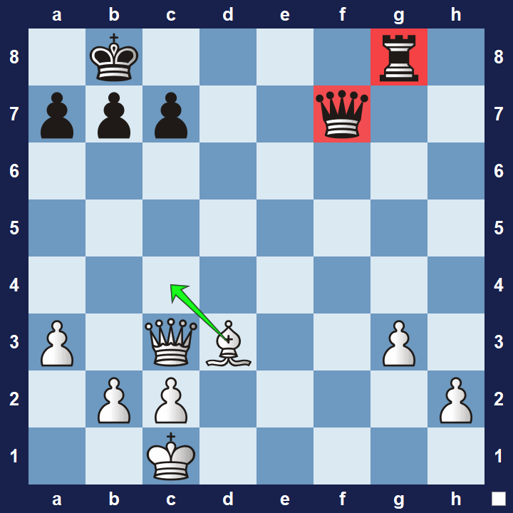

Overview
In chess, a tactic refers to a sequence of moves that limits the
opponent's options and may result in tangible gain. Tactics are
usually contrasted with strategy, in which advantages take longer to
be realized, and the opponent is less constrained in responding. The
fundamental building blocks of tactics are move sequences in which the
opponent is unable to respond to all threats, so the first player
realizes an advantage. This includes forks, skewers, batteries,
discovered attacks, undermining, overloading, deflection, pins, and
interference.
In general, there are two categories of tactics:
Gaining Material
Discovered Attack
A discovered attack is a move which allows an attack by another
piece. A piece is moved away so as to allow the attack of a friendly
bishop, rook or queen on an enemy piece. If the attacked piece is
the king, the situation is referred to as a discovered check.
Fork
A fork is a move that uses one piece to attack two or more of the
opponent's pieces simultaneously, with the aim to achieve material
advantage, since the opponent can counter only one of the threats.
Pin
A pin is a move that inhibits an opponent piece from moving,
because doing so would expose a more valuable (or vulnerable)
piece behind it. Only bishops, rooks, and queens can perform a pin,
since they can move more than one square in a straight line.
Skewer
A skewer is a move which attacks two pieces in a line, similar to
a pin, except that the enemy piece of greater value is in front of
the piece of lesser value. After the more valuable piece moves away,
the lesser piece can be captured.

Alternative Tactics
Sacrifice
A sacrifice of some material is often necessary to throw the
opponent's position out of balance, potentially gaining positional
advantage. The sacrificed material is sometimes later offset with a
consequent material gain.
Zugzwang
Zugzwang (German for the "compulsion to move") occurs when a player
is forced to make an undesirable move. The player is put at a
disadvantage because he would prefer to pass and make no move,
but a move has to be made, all of which weaken his position.
Zwischenzug
Zwischenzug (German for "intermediate move") is a common tactic in
which a player under threat, instead of directly countering,
introduces an even more devastating threat. The opponent then may
be forced to address the new threat, abandoning the earlier attack.
Windmill
In chess, a windmill is a tactic in which a combination of
discovered checks and regular checks, usually by a rook and a
bishop, often forcing the opposing king to move back and forth
between two squares, can win massive amounts of material. This
tactic is also sometimes referred to as a see-saw.